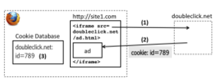

Lightbeam
Illuminating Online Tracking

Garrett Robinson and Monica Chew
Tracking
- Security Cameras
- EZ-Pass
- Public record data brokers
Online Tracking
- Analytics
- Advertisers
- Government surveillance
Why Track Online?
- Analytics helps website owners
- Targeted advertising may help consumers
- Major source of income for internet businesses
User perception
- Poor visibility
- Confuses mental model of the web
- Seen as creepy, invasive
- Non-consensual
Re-purposing tracking mechanisms
Cookies
- Site initially sets cookies
- Saved in the browser
- Later requests to that site include the cookies
Uses for Cookies
- Maintaining state
- User accounts (
username=coolguy55)
- Site-wide preferences (
lang=EN)
- Tracking
UID=2106bef3-23.61.194.248-1389648154
What does it look like for my browsing history?
Why Lightbeam?

How Lightbeam works
- Observe events related to cookies
- Store origins associated with these events
- Generate graphs using D3.js (visualization library)
Identifying tracking origins
- Map intuition to algorithms
- Algorithmic identification based on graph
- Exciting research from UW (Tracking Observer)

Using shared data
- Contributing data back to Mozilla
- Aggregating data to identify tracking domains
- Using open science for technical and policy decisions
Native Firefox integration
Make Lightbeam accessible to all Firefox users
Speed, correctness, and stability improvements
Try Lightbeam!
- Get Firefox: http://getfirefox.com
- Go to https://mozilla.org/lightbeam"
- Click blue button "Download Lightbeam for Firefox"
- Click green button "Add to Firefox"
- A pop-up says "Firefox prevented this site (addons.mozilla.org) from asking you to install software on your computer". Click "Allow"
- A pop-up says "Install add-ons only from authors whom you trust". Click "Install Now"
- Go to the Tools menu and choose "Show Lightbeam"